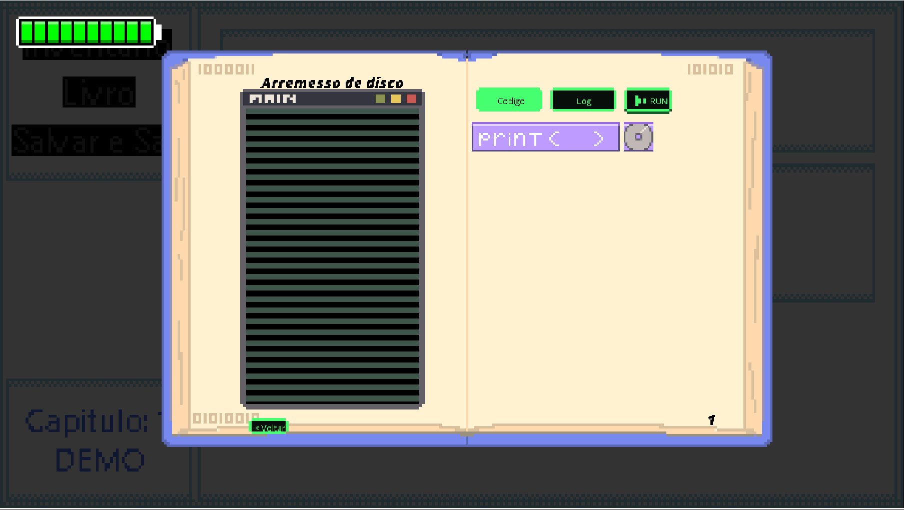
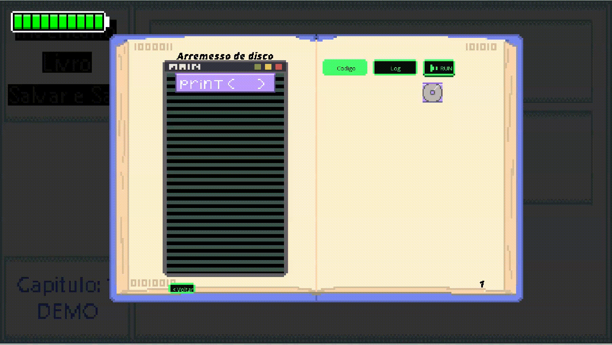
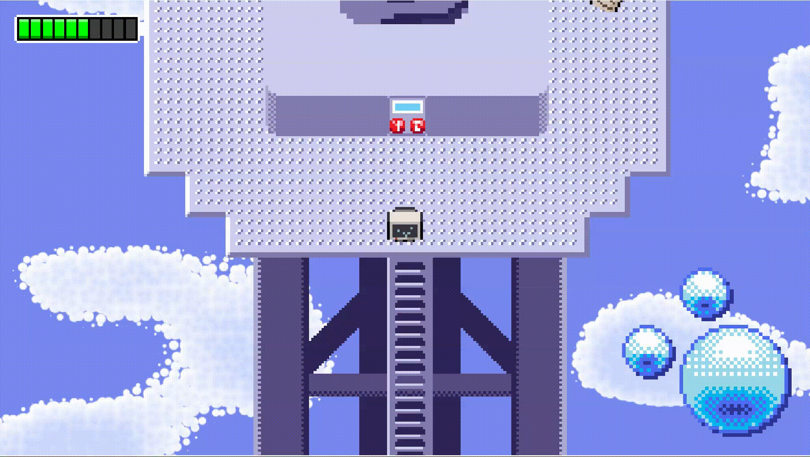

Livro de feitiços
O livro de feitiços é a ferramenta utilizada para criar e organizar os feitiços fantasiosos no jogo. É por ele que ensinamos métodos de programação, bem como as principais bases de python por meio de bloquinhos, semelhante ao Scratch. Depois que você termina de montar um feitiço, você desbloqueia ele e pode usar para se defender dos vírus.
Livro em branco

Exemplo de erro e conferência no log

Achando uma página

Voltar